Annotation Requirements¶
Evaluation & Payment Criteria¶
Warning
Important Notice: Please read the following part carefully. Your payment will be decided by the following criteria.
Acceptance Criteria:¶
For an accepted tasks, we have three levels of quality: OK (partial payment), Good(full payment), Excellent (with bonus e.g. 2x full payment).
We have two dimensions to evaluate the tasks: Complexity and Creativity
1. Complexity: How complex your task and actions are.¶
A task will be considered more complex, if it:
-
Has many actions
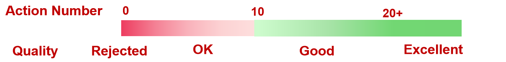
-
Requires complex operations: Performing intricate tasks that demand advanced features or settings within a specific application.
-
Involves professional apps/skills: E.g. VSCode, Snowflake, BigQuery, dbt, AutoCAD, Tableau, AWS S3, VMWare, Adobe PhotoShop, etc.
Note: Common daily life tasks (e.g. emails, zoom, Google Docs, Excel, etc.) can also be considered as good/excellent examples if they are creative/complex and involve multiple apps.
Note: The complexity of a task is not strictly decided by action number. If a task satisfies other metrics, it will still be considered as complex. While duplicates of simple and the same task can lower the complexity.
2. Creativity¶
- Diversity of tasks and domains: Your tasks should cover various domains and types, avoiding repetitively doing similar tasks such as installing many apps, creating accounts on various websites, or simply copying tasks with minor changes. Warning: Your account may be banned if this happens.
- Involves multiple apps/websites: Complete the task requires interacting among multiple websites and apps.
Tips: You can find and refer to app/website tutorial videos on YouTube to come up with creative and complex tasks.
Accepted Examples¶
Example at the level of 'Excellent'
Task Description¶
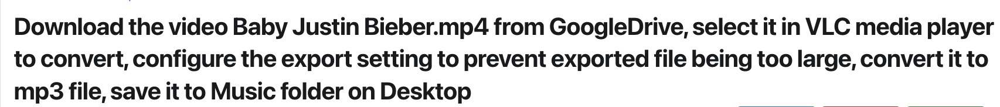
Actions¶
Step 1-3: Download the mp4 from GoogleDrive¶
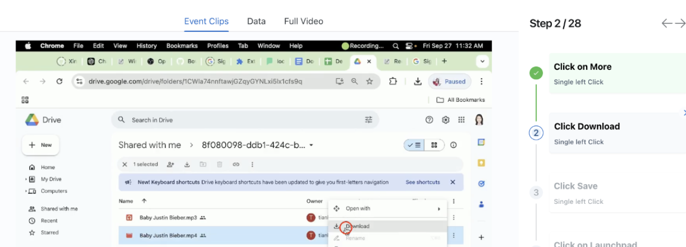
Step 4-5: Open VLC media player¶
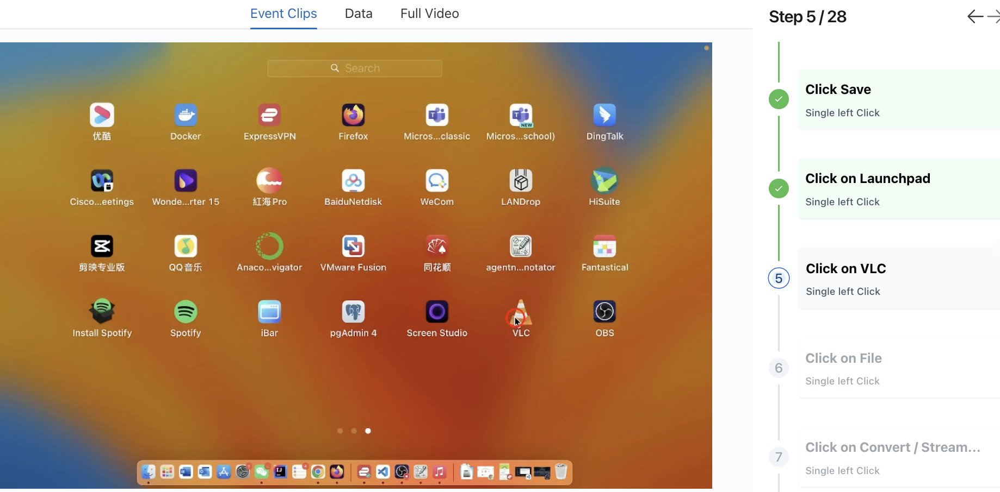
Step 6-10: Open the mp4 file in media player to convert¶
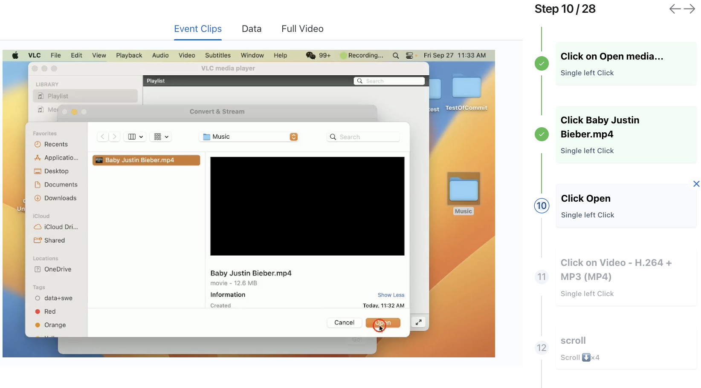
Step: 11-20 Select the target file type and configure the export setting¶
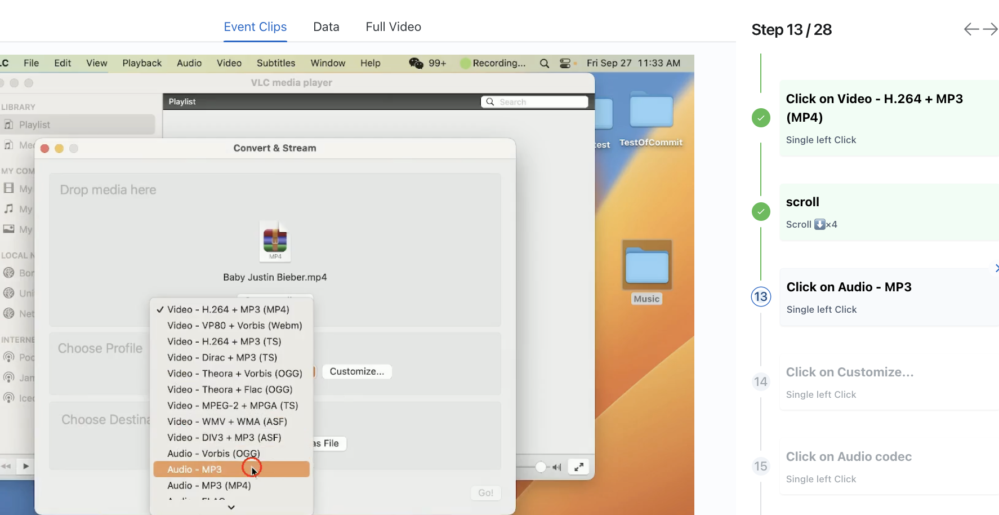 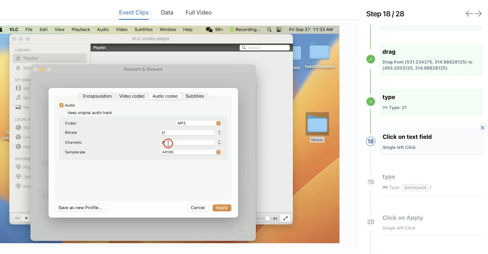
Step: 21-26 Save the mp3 to the Music folder on desktop¶
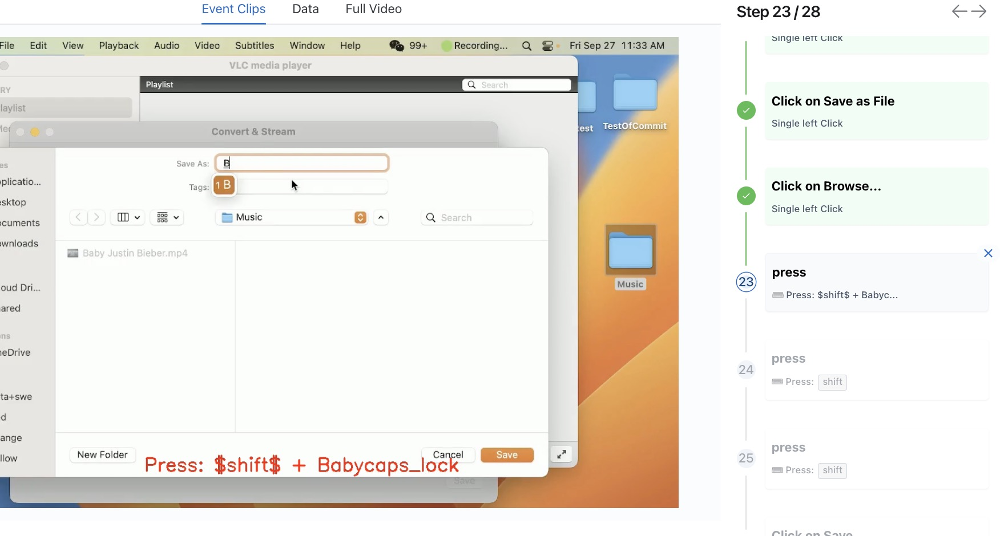
Step: 27-28 Open the mp3 to play it¶
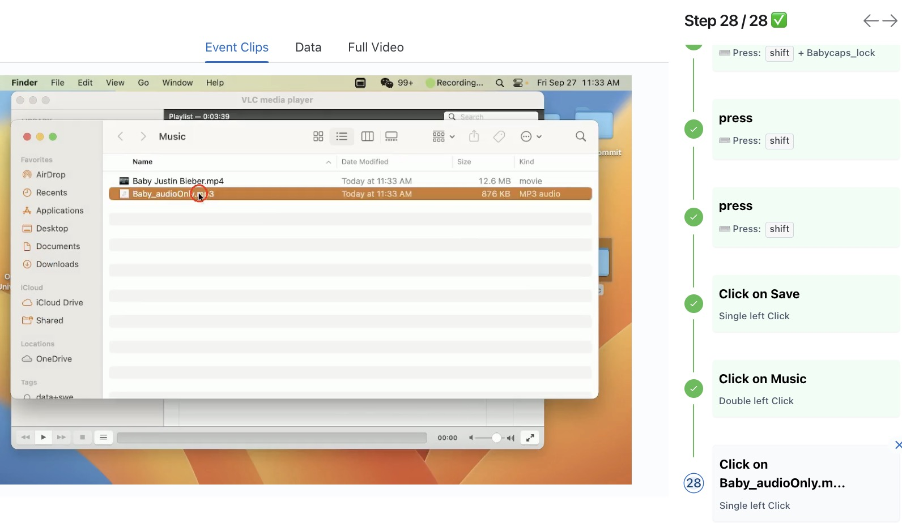
Example at the level of 'Good'
Task Description¶
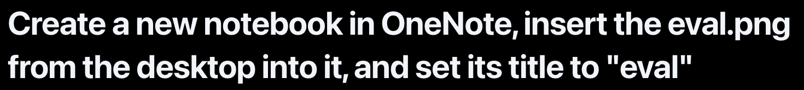
Actions¶
Step 1-2: Open OneNote¶
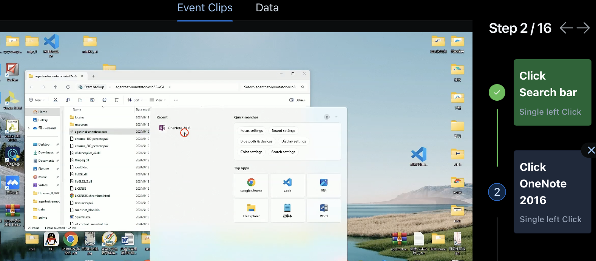
Step 3-8: Create a new notebook¶
 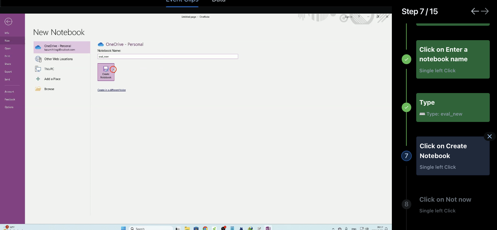
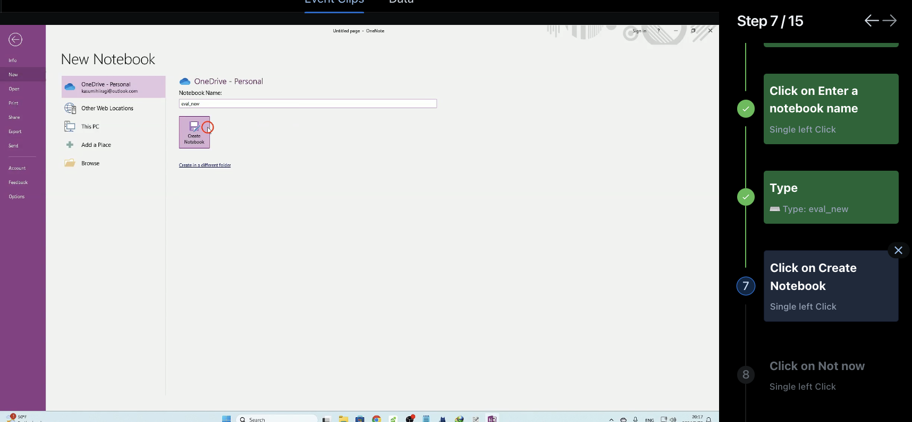
Step 9-14: Insert the picture from desktop¶
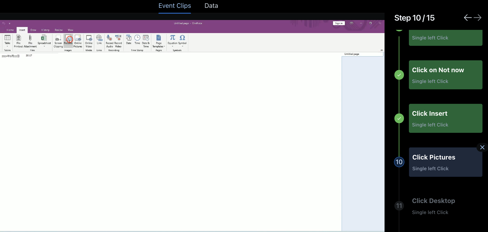 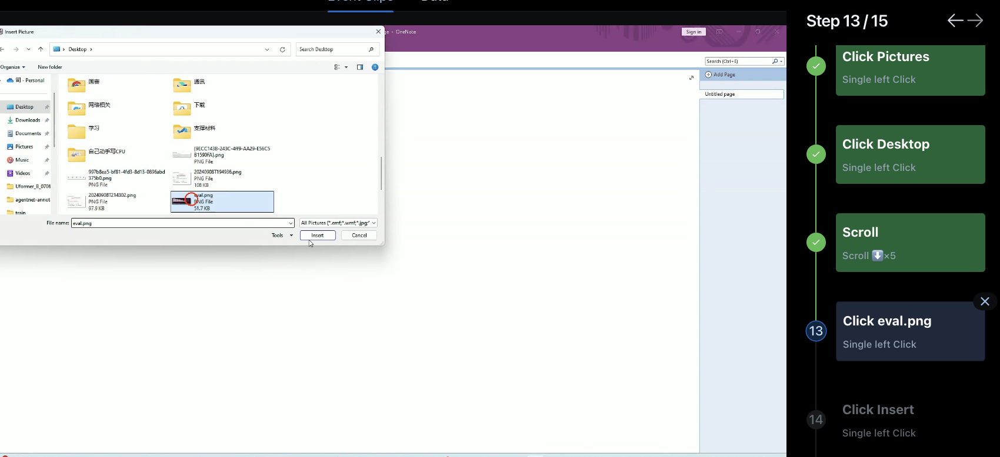
Step 15: Set the name¶
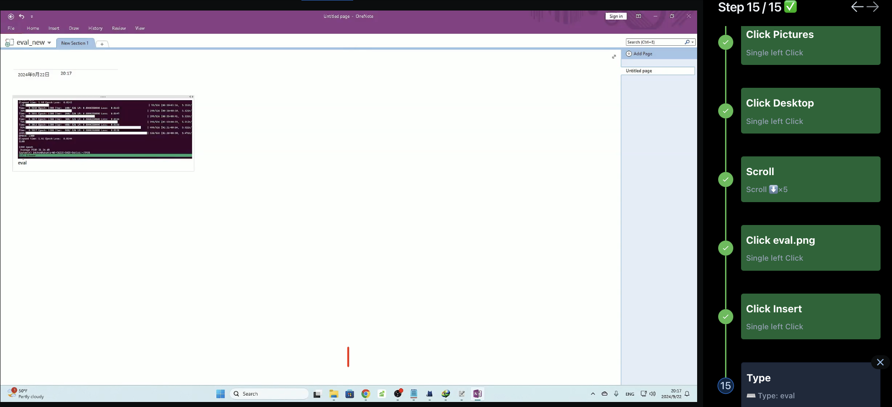
Example at the level of 'Ok'
Task Description¶
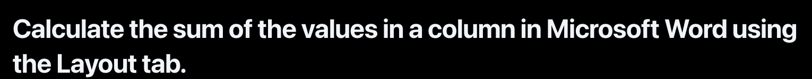
Actions¶
Step 1-2: Navigate to layout tab¶
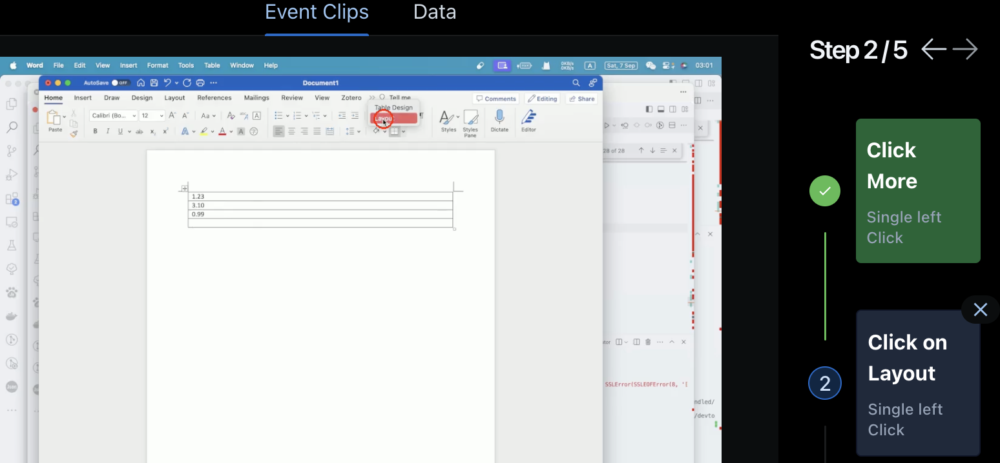
Step 3-5: Apply the formula¶
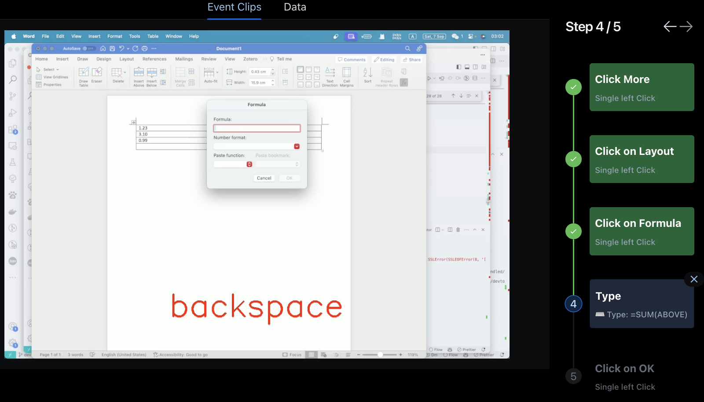
Rejection Criteria:¶
Rejection Criteria
- Task is too simple (Fewer than 3 steps and lacks meaningful content, e.g. "Send a What's App message", "Take a screenshot and save")
- Task is not completed or crucial actions are missing
- The task description and actions are inconsistent (e.g. Task description is about ordering hotel, but the actions are about buying flight tickets.)
- Task description is too simple/vague (e.g. "Listen to the first song of my favourite singer")
- Many irrelevant or unnecessary actions (E.g. click action is recorded as drag action, the position of the mouse in the screenshot is not correct)
- Annotated tasks are similar, lack of diversity (e.g. many tasks are about drawing, or finding songs)
Rejected Examples¶
Task is too simple
a. Tasks that has only 2~3 actions.¶
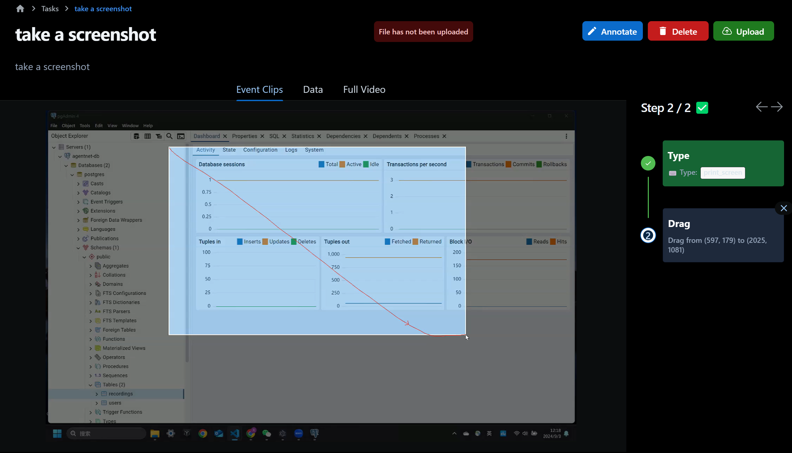
How To Improve
Think of a longer workflow that contain this simple task. For example, Take a screenshot of pgAdmin, save it to the folder "Desktop/database activities", record the number in the Google Doc.
Task description is too simple/vague
Very simple/vague task description that can not describe the step-by-step plan of the task¶
For example: - Find an interesting movie. (You should specify how to find, the name of the movie) - Delete spam emails.
Many irrelevant or unnecessary actions
Many meaningless actions or actions that is not related to the task goal, such as clicking the space, irrelevant scrolls...
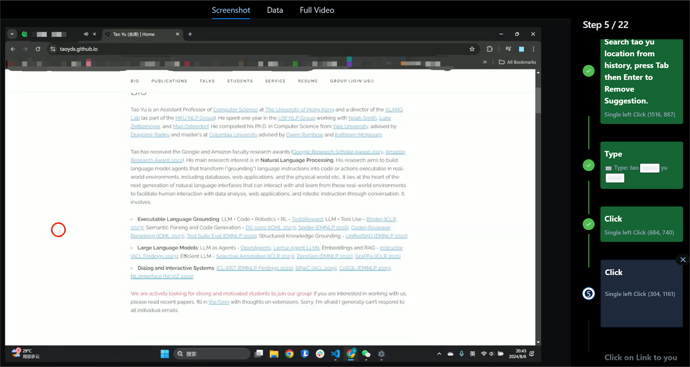
Annotated tasks are similar, lack of diversity
- Annotate too many tasks with the same kind: For example:
- Draw a tree; draw a people; draw...
- Find the most popular song of XX; find the second popular song of XX; Find the most popular album of XX
Find our Feedback on your Task¶
You can find our feedback on your uploaded tasks by going to Dashboard > My Annotation.
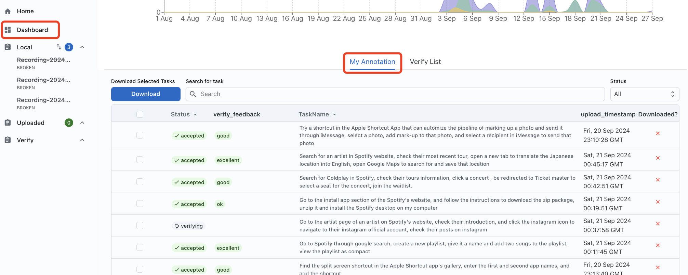
We will accept (as OK/good/excellent) or reject your uploaded tasks based on our requirements, which directly decides your payment.
Accepted Tasks
If the status is "accepted", you can see three qualities: Ok, Good, Excellent. 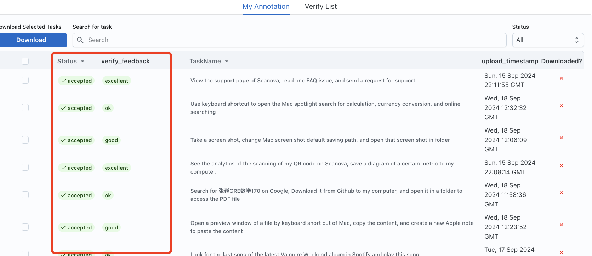
Rejected Tasks
If the status is "rejected", you can see the reasons. Please don't annotate or upload annotations with similar problems. 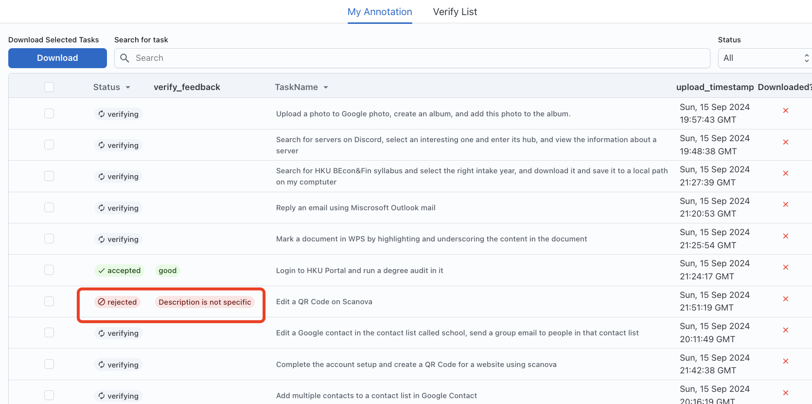
Pending Tasks
If the status is "verifying", it means your task is still not verified yet. Please wait patiently. 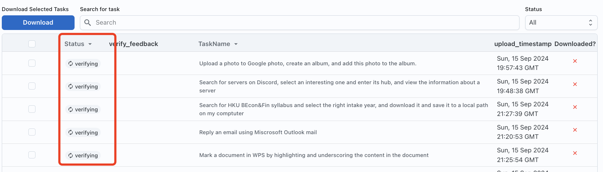